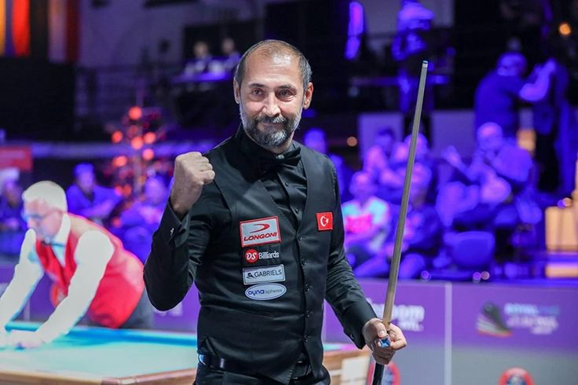
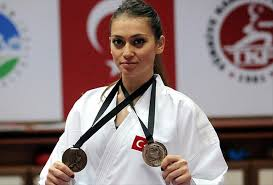
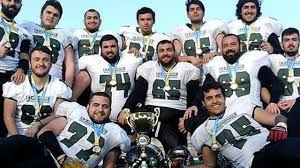

More İnformation

More İnformation

More İnformation
Sakarya is the most crowded 20th city in Turkey, Sakarya is the most 5th country region of Marmara After İstanbul, Bursa, Kocaeli and Balıkesir. It takes his name Sakarya River which in his region, Sakarya's capital is Adapazarı. Adapazarı won a prize in Danimarka and with that Adapazarı knowns is the Bicycle Country. Sakarya population is 1.098.115 this information depends on 2023 TÜİK's Researching. Sakarya has 16 district (Town) and 668 Neigbourhood. It takes a part on Çatalca Kocaeli district of Marmara Region. Sakarya Economy is generally depends on Agriculture, They Growing Nut also Corn in these Areas Industry is developing in Capital of Sakarya (Adapazarı). Industriel Establishments increased these industrialization Recently Years
Sakarya is a Sport Country Which to raise BWA and UMB Earth third Banth Champion Semih Saygıner in Billiards Supersport Earth Champion Kenan Sofuoğlu in Motorcycle Race In Karate Enes Erkan and Şeyda Burucu as a lot of well known Athletes
Tatankalar represent our country in Super League American Football and they are too successfull in this sport. Tatankalar which consisting university student, to exhibit Very Succesful Progress Among the University and Super League
Sakarya Museum is located approximately 3 km from Sakarya city center. Transportation to Sakarya Museum is easily possible by private vehicles, taxis and public transportation. Sakarya Museum is a very old building where Gazi Mustafa Kemal Atatürk and his mother stayed. Sakarya Museum contains many archaeological and ethnographic artifacts. Sakarya Museum is open to visitors between 08:30 in the morning and 17:30 in the evening during the summer months and between 08:30 and 16:00 in the winter months. There is no entrance fee or entry restriction to enter Sakarya Museum.